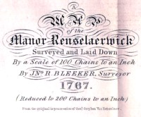

by
Nan Mullenneaux
John R. Bleecker was born in 1713. He was the eldest son of Rutger Janse and Catherina Schuyler Bleecker. The boy grew up in his mother's family home on Market Street as the son of the mayor of Albany. He followed the family business tradition - traveling beyond Albany to trade for furs as well as dealing in wine and foodstuffs. John also developed the special skills of the surveyor and map maker.
Settling into Albany life at age 30, this third generation American married seventeen-year-old Elizabeth Staats in August 1743. They set up a home on Pearl Street that became an Albany landmark. The marriage produced eight children, five of whom lived to adulthood. Three sons each named Barent, after Elizabeth's father, died in infancy. A fourth "Barent" became a prominent Albany resident.
In 1756, John R. inherited one-third of his father's personal estate and one half of his real estate. That same year, he was identified on the city census as a "rich" man.
In 1746, he was appointed Albany County sheriff. This Albany mainstay served on the city council for twenty-five years as assistant and alderman for the second ward. During his long tenure, Bleecker was called upon regularly to represent Albany in rent and land disputes.
But his principal legacy was as a surveyor - laying out tracts and property lines within Albany and beyond. His map of Rensselaerswyck dated 1767 has become a major historical resource.
In May 1775, he was elected to represent the second ward on the Albany Committee of Correspondence. However, a month later the sixty-two-year-old Bleecker was given permission to resign. Although he played no active role in the crusade for American liberties, he was granted a land bounty right in conjunction with the Albany regiment of the militia.
By the 1770s, John R. and his family were spending more time at their country home in Saratoga while maintaining their Pearl Street residence as well. John and Elizabeth owned substantial acreage in what became Montgomery, Otsego, Herkimer, and land on the Schoharie River.
In April 1788, he joined with a group of Albany contemporaries in signing a published statement opposing ratification of the Federal Consititution.
John R. Bleecker filed a will in March 1792. It left the Pearl Street home, two other houses, and lands beyond Albany to his three living sons. He died in October 1800 at the age of eighty-seven. His widow lived on as head of the Pearl Street home and died sometime after 1802.
 The
life of John R Bleecker is CAP biography number 201. This profiles is derived chiefly from family and community-based resources. In addition, John R. Bleecker papers are held at many regional repositories including
the New York State Library.
The
life of John R Bleecker is CAP biography number 201. This profiles is derived chiefly from family and community-based resources. In addition, John R. Bleecker papers are held at many regional repositories including
the New York State Library.
John R. Bleecker's map of all the houses on Rensselaerswyck in 1767 is an often-used historical masterpiece.
The census from the Earl of Loudoun papers mistakenly lists John R. as "John A. Bleecker."
first posted: 7/10/02; updated 12/25/08